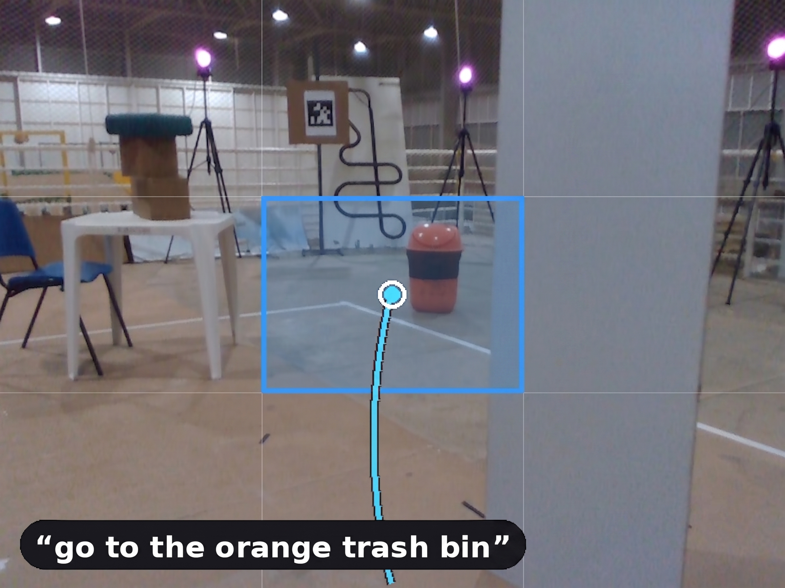
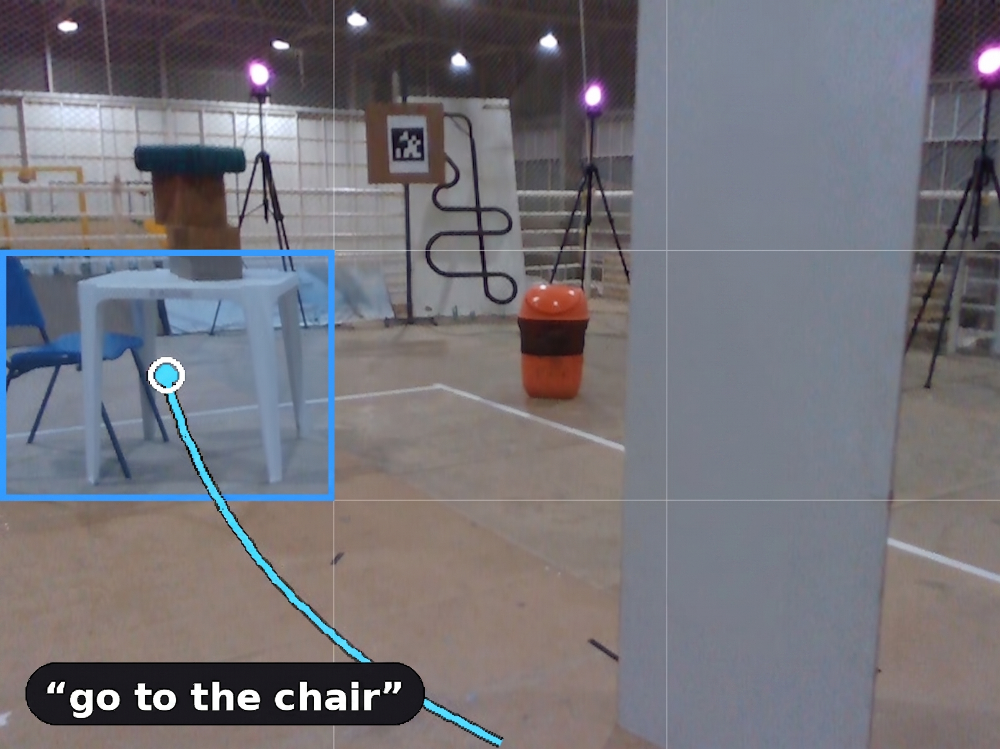
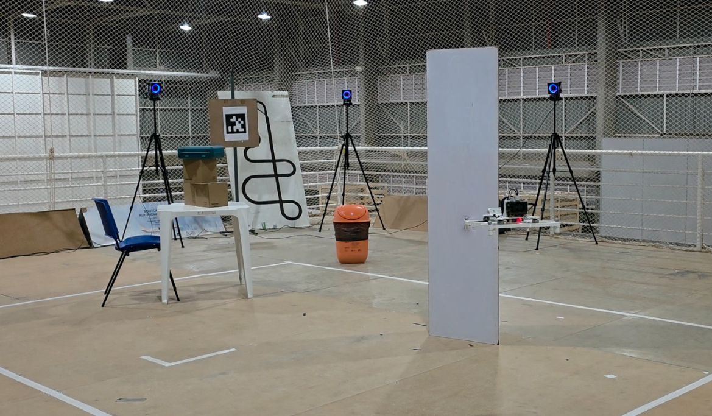

Say it, and it flies onboard
The whole pipeline runs on the drone, with no offboard compute and no map prepared in advance.
Give the drone a plain-language instruction such as “go to the trash bin,” and it finds the object in its camera, turns that region into a 3D goal using depth, plans a collision-aware path, and tracks it to the target. A quantized vision-language model, a B-spline planner, and a learned flight policy run together in real time on the drone's Jetson Orin NX, so nothing leaves the aircraft.
Three stages, one aircraft
Grounding, planning, and control stay separate, so a failure can be traced to a single module instead of a black box.

Open-vocabulary grounding
The VLM picks a coarse image region for the named object. This keeps the interface open-vocabulary, easy to validate, and robust to depth noise.



Drag the divider. The scene stays the same, but naming a different object moves the region the model selects.
Navigation in clutter
The same stack, without changes, plans around obstacles between take-off and the target, or safely declines to commit when grounding is uncertain.
Safe by design
Every goal is checked before the drone acts, and the stack would rather hold position than fly an unsafe approach.
A finite-state safety layer sits between grounding and flight. It accepts a goal only after the model agrees on the same region across several consecutive frames, and it rejects any goal that falls outside the operating bounds or lacks valid depth. If nothing clears those checks, the drone stays where it is and waits for the next reading instead of committing to a guess. The planner adds a second gate, running a trajectory only when it is collision-free on the current occupancy map. In the cluttered trials, this is what kept the flights safe: when the target left the field of view or the grounding was uncertain, the stack simply declined to commit, and no collision occurred.
Experimental setup
A controlled indoor volume, open for the object-goal trials and cluttered for the obstacle-avoidance runs.


Citation
@inproceedings{tayar2026vlnonthefly,
title = {VLN on the Fly: An Onboard Vision-Language Navigation Stack for Aerial Robots},
author = {Tayar, Marco S. and Tommaselli, Felipe and Capezutto, Gianluca and
Saraiva, Pedro Antonio Rabelo and de Freitas, Pedro H. V. and Kido, Lucas and
Sonego, Guilherme and Godoy, Ricardo V. and Becker, Marcelo},
booktitle = {International Micro Air Vehicle Conference (IMAV)},
year = {2026}
}
Acknowledgments
Supported in part by the São Paulo Research Foundation (FAPESP), grants #2025/20858-7 and #2025/22381-3; the Conselho Nacional de Desenvolvimento Científico e Tecnológico (CNPq), grant 308092/2020-1; and Petrobras, using resources from the R&D clause of the ANP, in partnership with the University of São Paulo and FAFQ.